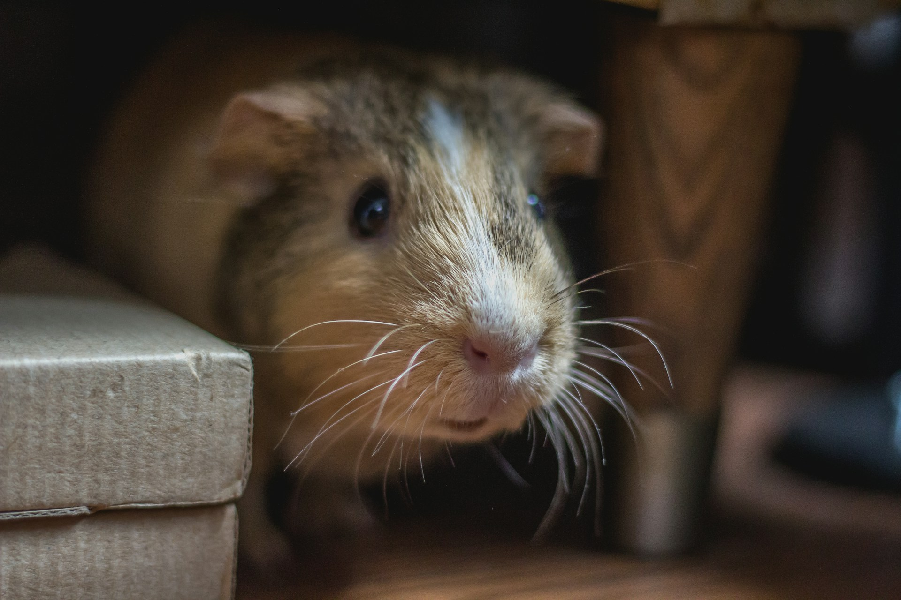

Effective Mice Control in Brampton: Keep Those Furry Invaders Out!
Brampton’s growing urban sprawl isn’t just attracting new residents – it’s also inviting a less-welcomed crowd. No, we’re not talking about the tourists (they’re mostly fine), but the mice! These little critters may look cute on TV, but once they sneak into your home, they’re a total nightmare. If you’re battling an invasion, this article’s for you.

Why Are Mice a Problem in Brampton?
Brampton’s mix of cozy suburban homes, bustling businesses, and green spaces makes it prime real estate for mice. Unfortunately, they don’t exactly wait for a welcome invitation. With their tiny size, mice can squeeze into the smallest cracks, gnaw their way through your favorite snacks, and leave a trail of droppings that’s anything but charming. And while they might be looking for food and shelter, what they’re really bringing into your home is chaos.
The Real Risks of a Mouse Infestation
At first glance, you might think mice are harmless. After all, they’re small, right? But don’t let their size fool you. A mouse infestation can:
- Contaminate Your Food: Mice love to nibble on pantry staples like cereal, rice, and snacks. The bad news? They also leave behind bacteria and droppings, making your food unsafe to eat.
- Spread Disease: Mice can carry various diseases, such as Hantavirus and salmonella. And while you won’t see them wearing a little "Warning: Contagious" sign, their droppings, urine, and saliva can transmit serious health risks.
- Damage Property: Mice have teeth that never stop growing, so they chew constantly – on wires, furniture, walls, you name it. This gnawing habit can result in electrical fires or costly repairs.
How Do You Know You Have Mice?
Mice are sneaky little guys. They won’t announce their arrival with a drumroll – they’ll quietly set up shop in the dark corners of your home, undetected for as long as possible. So, how do you know you have a problem?
- Droppings: Mouse droppings are tiny, dark, and shaped like rice grains. If you start seeing them around food storage areas, it’s time to raise the red flag.
- Noises in the Night: Mice are nocturnal, meaning they do most of their mischief while you’re fast asleep. If you hear scurrying sounds in your walls or ceiling at night, you’re likely hosting some unwanted guests.
- Gnaw Marks: If you spot tiny gnaw marks on food packaging, furniture, or electrical wires, you’ve got a mouse problem.
- Musky Odor: A house that has mice often develops a musky smell. Trust us, it’s not a pleasant addition to your home’s ambiance.
Prevention is Key
They say prevention is better than cure – and when it comes to mice, that’s especially true. Here are some easy steps you can take to keep these furry freeloaders from entering your home:
- Seal Entry Points: Mice can slip through holes as small as a dime. Go on a mouse-sized tour of your home and seal any potential entry points with steel wool or caulk.
- Store Food Properly: Mice love your pantry as much as you do. Store food in airtight containers and clean up crumbs or spills immediately.
- Declutter: Mice love clutter because it provides perfect hiding spots. Keep your home tidy, especially in attics, basements, and garages.
- Take Out the Trash: Mice are opportunists, and garbage is a treasure trove of snacks for them. Keep trash in sealed bins and take it out regularly.
Time to Call the Pros
If mice have already moved in, don’t wait for them to pay rent. It’s time to call in the experts to evict them for good. Mice control in Brampton is more than just setting a few traps and hoping for the best – it requires a strategic approach.
At Excellent Pest Control, we specialize in keeping homes mouse-free. Our team uses proven methods and the latest technology to not only remove the current infestation but also ensure they don’t return. Our pros are trained, experienced, and, yes, we take a little pride in being able to outsmart the most cunning of mice.
Why Choose Excellent Pest Control?
We get it – no one wants to share their home with mice. Here’s why you should trust us to help:
- Safe Methods: We use safe, humane, and environmentally-friendly solutions to rid your home of mice.
- Expert Knowledge: Our team is well-versed in mouse behavior (no, we don’t chat with them, but we know their tricks).
- Long-Term Prevention: We don’t just stop at removing the mice. We’ll work with you to seal entry points and provide tips to make sure they don’t come back.
Let’s Get Started
Ready to reclaim your home? Give us a call at 416-457-8484 or drop us a line at info@excellentpestcontrol.ca. We’ll take care of the mice so you can get back to enjoying your space, minus the furry roommates.
With Excellent Pest Control, you’re not just hiring pest control – you’re hiring peace of mind.